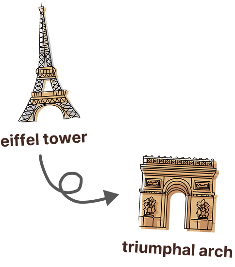
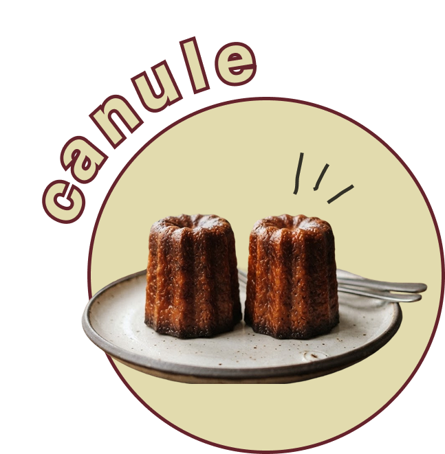
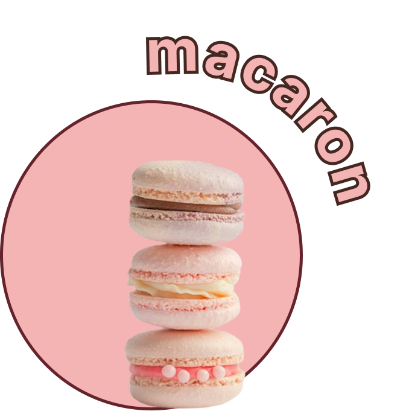
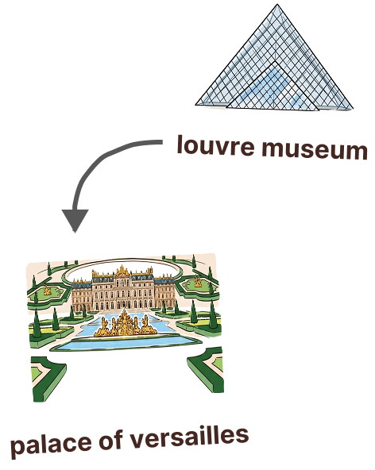
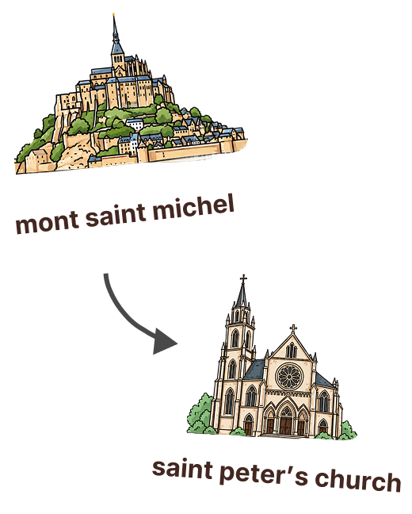
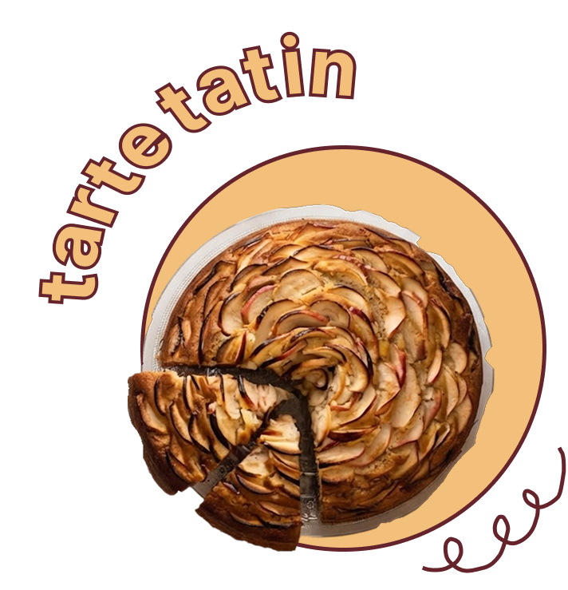

ボルドー地方の修道院で生まれた伝統菓子。ワインの製造過程で濁りを取り除く「澱引き」の際に大量の卵黄が使われていた。その際余ってしまう卵黄を無駄にしないため、修道女たちが小豆粉やラム酒、バニラと合わせて焼き上げたのが始まりといわれる。

現在主流のカラフルな「マカロン・パリジャン」のルーツは、16世紀にイタリアからフランス王室へ嫁いだカトリーヌ・ド・メディシスが持ち込んだ素朴なアーモンド菓子にある。その後、フランス各地の修道院に伝わり、肉食が禁止されていた修道士たちに貴重な栄養源として親しまれていた歴史を持つ。



19世紀後半、パリ郊外のホテルを経営していたタタン姉妹の「愛すべき失敗」から誕生したお菓子。妹のステファニーがリンゴのタルトを作っていた際、リンゴを砂糖とバターで炒めすぎて焦がしそうになり、慌ててタルト生地を上からかぶせて焼き、ひっくり返して出したところ、客に大好評となったことで広まった。